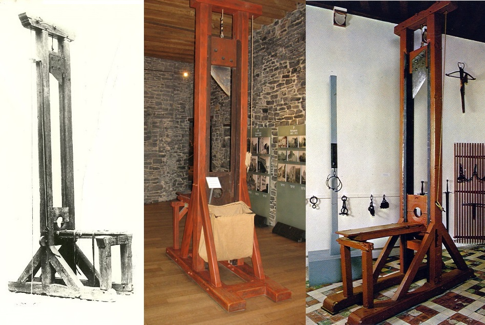
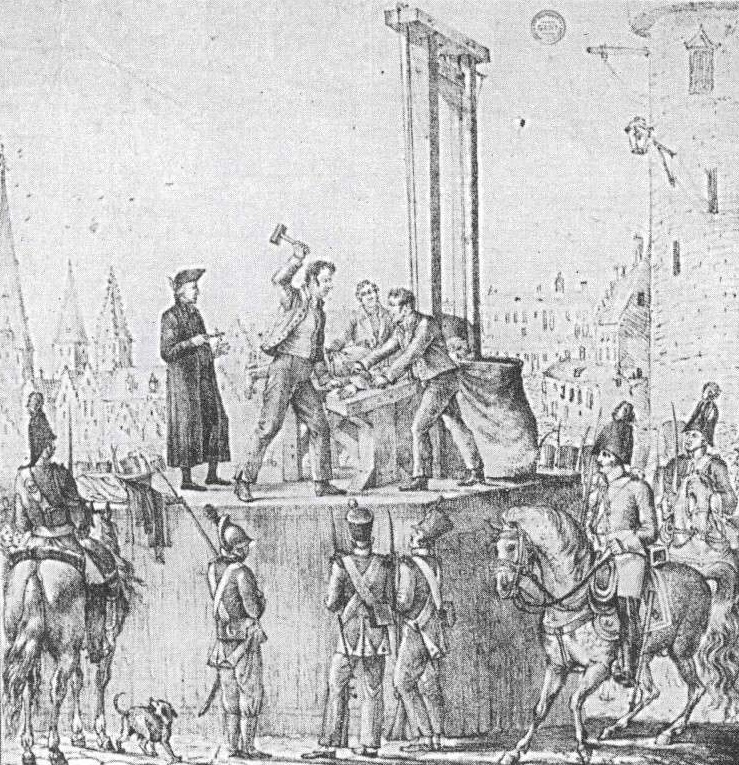

Palmarès de Belgique

{kind=link}
C’est quand même injuste de constater que la Belgique nous a offert Jacques Brel, André Franquin, Virginie Efira et que nous, nous leur avons offert la guillotine…
Petit rappel historique. En 1795, le futur royaume de Belgique se retrouve sous domination française. La République ayant donné naissance aux départements scinde donc le territoire en neuf « départements réunis » :
- Les Deux-Nèthes (chef-lieu : Anvers)
- La Dyle (chef-lieu : Bruxelles)
- l'Escaut (chef-lieu : Gand)
- Les Forêts (chef-lieu : Luxembourg)
- Le Jemmapes (chef-lieu : Mons)
- La Lys (chef-lieu : Bruges)
- La Meuse-Inférieure (chef-lieu : Maastricht)
- L'Ourthe (chef-lieu : Liège)
- Le Sambre-et-Meuse (chef-lieu : Namur)
A la défaite de l'Empire, les départements deviennent partie intégrante du Royaume des Pays-Bas, jusqu'à la création du Royaume de Belgique en 1830. Sur les neuf départements d'antan, deux sont scindés : la Meuse-Inférieure, devenue province du Limbourg, est partagée entre Pays-Bas (qui conservent Maastricht) et Belgique (Hasselt devenant le chef-lieu du Limbourg belge), et le département des Forêts éclate entre Grand-Duché du Luxembourg et province du Luxembourg, avec pour capitale Arlon.
Suivant cette histoire mouvementée, la Belgique ne fut pas épargnée par la guillotine (qui resta curieusement la méthode de supplice usitée même sous domination néerlandaise).
Jusqu'à l'abolition de la peine de mort en 1996, et même après l’adoption d’un nouveau Code Pénal en 1867, la Veuve resta dans la législation le mode d'exécution des condamnés à mort belges, même si on ne l'employait plus depuis près de 80 ans, et même depuis cent-trente ans, la dernière tête tranchée en Belgique relevant d'une situation parfaitement exceptionnelle.

{kind=link}
Cependant, il suffit d’observer les statistiques pour constater que cette relative absence de supplice n’augmentait pas le nombre des crimes commis… Aussi, par arrêté royal, dès le 18 juin 1853, le nombre des exécuteurs est révisé à la baisse, et au bout de trois ans, il ne restera plus que trois exécuteurs en chef en fonctions dans le pays : à Bruxelles, à Gand et à Liège, et à la fin du XIXe siècle, on se contentait d’entretenir un exécuteur dans la capitale. C’était sans doute encore trop aux yeux de Célestin Demblon, député socialiste de Liège et abolitionniste dans l’âme. Chaque année, en effet, Demblon demandait que les appointements du bourreau soient supprimés. En vain : la peine devait rester, même si elle n’était désormais plus que symbolique. Et l’exécuteur avait, comme autre tâche, celui de « l’exposition » des arrêts de morts prononcées contre des prévenus contumax, en une cérémonie curieuse qui arrivait deux à trois fois par an.
Voici ce qu’en disait la presse française en 1892, à la mort de François-Jean Boutquin (ou Boitquin), exécuteur-adjoint de Bruxelles, à l’âge de 75 ans.
{kind=link}
« M. Boutquin était un petit vieillard propret, aux favoris blancs, aux allures de bourgeois endimanché, qu’on voyait apparaître de temps en temps sur la Grand’Place aux jours des expositions en effigie. Un aide allait planter un pieu entre deux pavés, quatre gendarmes à cheval se postaient derrière ce bois de justice, leur brigadier commandait : « Sabre haut » et, au moment où les lattes sortaient du fourreau, on voyait sortir Monsieur de Bruxelles du bureau de la permanence de police tenant un papier. Ce papier c’était l’arrêt qui condamnait le contumax. Boutquin allait accrocher le document au poteau puis rentrait à la Permanence. Une heure après, on le voyait reparaître ; de son même pas tranquille il allait décrocher la pancarte, adressait un « Merci » timide aux gendarmes qui rengainaient leur espadon et filaient au trot vers leur caserne, puis retournait chez lui, à pied, son parapluie ou sa canne sous le bras, perdu parmi les passants. Il habitait dans un faubourg une petite maison tranquille où il ne recevait personne."
Après le décès de Boutquin, l’intérim est assuré par l’exécuteur de Liège, M.Hamel, qui notamment « exécute » en effigie le 09 mai 1894 les anarchistes Wilems et Tardeur. C’est le 03 septembre 1894 que Pierre Nieuwlandt, 32 ans, ouvrier liquoriste, et père de deux filles, hérite de ce bien curieux poste dont il sera le dernier occupant.
« Au commencement de cette année, Pierre Nieuwlandt se trouvait dans un estaminet de Saint-Josse-Ten-Noode, avec quelques camarades , quand survint un « garde de ville de ses amis. La conversation, un instant interrompue par l'arrivée du nouveau venu, reprit avec plus d'entrain. On en vint à parler des difficultés que rencontrent les ouvriers ou les employés pour trouver une situation.
- Je connais pourtant une bonne place, dit le sergent de ville.
- Serait-ce la place de Brouckère ? demanda un des assistants, en riant bruyamment.
- Non, non. C'est une place très «conséquente » et très sûre, avec de beaux appointements. Et puis pas beaucoup à travailler.
- Godferdoom ! il doit y avoir au moins deux cents candidats !
- Erreur. Depuis la vacance, personne ne s'est présenté. Il s'agit de prendre la succession de Boutequin.
Un froid s'ensuivit. Boutequin. c'était le bourreau. Cependant, Pierre Nieuwlandt dit en riant
- Je poserais bien ma candidature, pour une fois !...
- Allons donc, tu n'oserais pas ! Pense donc, bourreau !
- Je vous parie que j'écris tout de suite au ministre de la justice.
- Tenu ! Vingt chopes de faro que tu ne sollicites pas la place !
Séance tenante – c’est le mot -, Nieuwlandt demanda « de quoi écrire » et rédigea une lettre au ministre compétent. Cette lettre fut envoyée, - et la conversation tomba sur un autre sujet.
Il faut croire que les demandes n'affluèrent pas au ministère de la justice, et que celle de Nieuwlandt fut probablement la seule, car notre candidat-bourreau, qui ne songeait plus à cette affaire, fut, avant-hier, officiellement informé de sa nomination. On pense s’il fut stupéfait, - et ennuyé. Il avait gagné ses vingt chopes de faro, mais il ne lui était guère agréable de devenir, même à ce prix, l'exécuteur des hautes-œuvres de Bruxelles. L'éventualité toujours possible d'une exécution capitale lui faisait perdre sa propre tête. Jamais, lui, un honnête et paisible ouvrier, n'aurait la force ni le courage de trancher le cou à un de ses semblables.
Pourtant les appointements « conséquents » le séduisirent, - et il accepta, en se disant, après tout, qu'il y a des chances pour que le Roi continue à ne pas se départir de ses habitudes de clémence, même pour une fois. Et puis, il serait toujours temps de donner sa démission dans le cas où il serait requis de procéder à une véritable exécution capitale. Et voilà comment Pierre Nieuwlandt est installé exécuteur des hautes-oeuvres de la ville de Bruxelles, - ou plutôt « exécuteur des arrêts de justice », car tel est le titre moins prétentieux que le gouvernement lui a donné.
Comme ses nouvelles occupations lui laisseront beaucoup de loisir, il a résolu de ne pas quitter la distillerie où il travaille depuis cinq ans. Il cumulera. »
"Exécuteur des arrêts de justice" ? Nieuwlandt n’appréciait pas ce titre, pas plus que celui de bourreau, se disant « simplement un employé du parquet », et avoua que le supplément financier, même minime - Le crédit fut tout de même baissé progressivement de 4000 à 2450 francs, puis à 1800 francs annuels, merci Monsieur Demblon - serait utile à l’éducation de ses enfants, pour lesquels il espérait une vie professionnelle meilleure que la sienne.
Jamais on ne requit ses services, même s’il passa très près de devoir s’y soumettre : durant la première Guerre Mondiale, onze soldats furent exécutés, dont deux pour crimes de sang, mais relevant de la justice militaire, tous furent passés par les armes… Sauf dans le cas du maréchal-des-logis Emile Ferfaille, dont le ministre de la Justice Henry Carton de Wiart voulut faire un exemple en le faisant décapiter comme le criminel de droit commun qu’il était… Nieuwlandt échappa à la besogne pour une raison simple : les bois de justice, rangés à Bruxelles, étaient intransportables jusqu’à la Flandre-Occidentale, car il fallait pour cela franchir les lignes allemandes… De plus, on se soucia de l’état de la guillotine belge, et on émit des réserves à l’idée qu’un bourreau néophyte puisse transformer un exemple en boucherie… Aussi, et malgré les réticences de ce dernier, ce fut Anatole Deibler, exécuteur de France, qui fut exceptionnellement réquisitionné, avec sa bécane, pour mettre un point final à l’affaire Ferfaille, procédant ainsi à la dernière exécution de droit commun en Belgique.
{kind=link}
Nieuwlandt, lui, mourut « de sa belle mort » en décembre 1929 et faute de candidats, on ne le remplaça pas. Ce décès ne devait pas pour autant sonner le glas de la peine de mort en Belgique. Les condamnations se suivaient, les jurés n’hésitant pas à voter le châtiment suprême puisqu’ils savaient que la grâce serait au bout du chemin. La Seconde Guerre Mondiale devait changer la donne, ou plutôt la Libération, sans pour autant donner du pain sur la planche à la guillotine : du 13 novembre1944 au 08 août 1950, 243 personnes seront fusillées pour crimes de guerre et collaboration sur 1202 condamnés…
Après une période d’accalmie dans les années 50-60, le nombre de condamnations remonta progressivement. Chaque année, la sentence était prononcée une dizaine de fois, principalement par les assises de l’Hainaut, mais cette procédure faisait tâche au cœur d’une Europe devenue résolument abolitionniste. La peine capitale en Belgique devint chose du passé avec la loi du 10 juillet 1996, et neuf ans plus tard, l’enterrement définitif eut lieu quand elle fut reconnue anticonstitutionnelle.
Voici un lien pour voir une page intéressante sur le sujet des exécutions en Flandre Occidentale, mais la page est en néerlandais. Une autre page sur la peine de mort en Belgique.
Enfin, la page (à compléter) des condamnations prononcées en Belgique de 1830 à 1996.
| Date | Heure | Lieu | Nom | Crime | Exécution | Condamnation | décembre 1797 | Liège (Ourthe) | Six condamnés | 06 novembre 1798 | Bruges (Lys) | Salembier | 09 mai 1801 | Liège (Ourthe) | Quatre condamnés | 17 mai 1801 | Liège (Ourthe) | Cinq condamnés | 25 mai 1801 | Liège (Ourthe) | Cinq condamnés | 15 juin 1801 | Liège (Ourthe) | Quatre condamnés | 02 novembre 1803 | Bruges (Lys) | Louis Baeckelandt, 20 complices, Barbara Bruneel, Francisca Ameye et Isabelle Van Maele | 14 avril 1806 | Bruges (Lys) | Pierre Lensberghe, François Bernet et Isabeau Hermans | L'exécution d'Isabeau Hermans, très jeune et jolie, fut un carnage. Le couperet du tomber trois fois. Le bourreau fut destitué en juin. | 05 juin 1807 | Vendredi | Mons (Jemmapes) | 1811 | Liège (Ourthe) | Marie-Jeanne Jacob, veuve Réel | Empoisonneuse | 1812 | Liège (Ourthe) | Marie Polet, épouse Warotte | Empoisonneuse | 1812 | Liège (Ourthe) | Marie Godefroid | Assassinat | 06 février 1813 | Ypres (Lys) | Jacques Deckmyn | 45 ans, poissonnier. Met le feu à la maison de Pierre de Jonghe le 16 avril 1812 à Oostnieuwkerke. | 11 septembre 1812 | 13 février 1813 | 12h | Bruges (Lys) | Marie Catherine Ludwig | 24 ans. Tua Cécile Martens | 16 décembre 1812 | 05 juin 1813 | Liège (Ourthe) | Quatre condamnés | Trois assassins et un auteur de vol avec les cinq circonstances | Exécutés place aux Chevaux | 04 décembre 1813 | Ypres (Lys) | Jacques Van Hove | Charron. Assassin de Barbe Ysenbrandt, épouse Boone, le 29 novembre 1812 | Exécuté place du marché. | 25 septembre 1813 | 181? | Liège (Ourthe) | Marie-Thérèse Brambois | Incendie volontaire | 181? | Liège (Ourthe) | Jeanne Detrembleur | Infanticide | vers le 07 octobre 1814 | 12h | Hal |
Deux hommes | Vols avec les quatre circonstances. | Première venue de la guillotine à Hal. | 23 février 1816 | 12h | Courtrai Flandre-Occidentale |
Joseph De Beuck | Empoisonna à l'arsenic son épouse Thèrése Van Oost le 13 juillet 1815 | Supplicié sur la Grand-Place. | 15 décembre 1815 | 1817 | Namur | PARRICIDE | 04 octobre 1817 | 12h | Bruges Flandre-Occidentale |
Pierre de Bisschop, Jean de Bisschop et Hubert Van Roye | 39 ans et 27 ans, tisserands, frères, et 22 ans, marchand d'ardoises. Assassins de Pierre de Clerq lors d'un cambriolage le 27 décembre 1816 à Avelghem. | 03 juillet 1817 | mars 1820 | Liège | Pickell et Deschamps | 17 février 1821 | Bruges Flandre-Occidentale |
Joanna Verplancke | 26 ans, ménagère. Tua son nouveau-né à Wardamme le 27 avril 1820. | 22 septembre 1820 | juin 1821 | Liège | Magonette et Géna | 1821 | Liège | Jowat, Florkin et Longnaye | février 1824 | Liège | Joseph Rahier | Assassin du prêtre de Donceel | 27 août 1824 | 12h | Bruxelles Brabant-Méridional |
Pateet | Empoisonneur. | Exécuté sur la grande place. | 19 février 1825 | Bruges Flandre-Occidentale |
Engelalbert Ghijselen | 40 ans, aubergiste à Bixschote. Attaqua la maison Boerhanne, tuant Barbara Loot, Louis Boerhanne, blessant Joseph Boerhanne avant de mettre le feu à la maison. | 17 avril 1824 | vers le 25 février 1825 | 12h | Bruxelles Brabant-Méridional |
Petitjean | Tentative d'assassinat. | Exécuté sur la grande place. | 04 février 1825 | vers le 18 mai 1825 | Bruxelles Brabant-Méridional |
Henri Vancriekinge et Pierre Hendrickx | En juillet 1824, assassinent un de leurs voisins à Ligne à coups d'arme à feu. | Exécuté sur la grande place. | 24 décembre 1824 | 04 juin 1825 | Bruges Flandre-Occidentale |
Francis Godris et Godelieve Verplaetse | 22 ans, ouvrier, et 35 ans, domestique. Assassinèrent à Oostduinkerke Karel Rustiens. | 19 juin 1824 | vers le 31 août 1825 | 12h | Jean-Baptiste Michel | Tentative d'assassinat et vol. | Exécuté sur la grande place. | 21 novembre 1825 | Namur | François Laroch | Assassin de femmes. | vers le 12 juillet 1826 | Bruxelles Brabant-Méridional |
Josse De Bast | Forçat libéré. Le 04 novembre 1825, dans un bois près de Linthout, agresse et vole Mlle Van Keerberghen. Auteur d'une autre tentative d'assassinat. Son complice G. Vandercrutssen est condamné aux travaux forcés à perpétuité. | Exécuté sur la grande place. | 20 avril 1826 | vers le 24 février 1827 | 15h | Gand Flandre-Orientale |
François d'Haene | Journalier, récidiviste. A Baelegem, assassinat et vol et attaque d'un enfant de treize ans sur un chemin public pour le voler. | Exécuté au marché au Vendredi. | Condamné la veille de son exécution. | 1827 | Bruxelles (Brabant-Méridional) | Dernière exécution à Bruxelles avant l'Indépendance. | vers le 13 juillet 1828 | Gand Flandre-Orientale |
Jean Maes | 28 ans. Le 02 décembre 1827, à Hal, assassine la servante de sa mère. | février 1828 | vers le 31 octobre 1828 | Gand Flandre-Orientale |
Jean Vanvoorde | 23 ans. Assassine le 23 mars 1828 à Lembeke la veuve Marie Aerts, fileuse. | 05 juillet 1828 | vers le 26 novembre 1828 | Mons Hainaut |
Pierre Joseph François | PARRICIDE. Empoisonna sa mère. | 27 novembre 1828 | Renaix Flandre-Orientale |
Joseph Jouret, François Jouret, André Broquelaire, Charles Broquelaire, André Joseph Deprez et Jean-Joseph Jouret. | Brigands à Ellezelles. Vol avec les quatre circonstances aggravantes. Condamnés en première instance par les assises du Hainaut, arrêt cassé. | Exécution multiple la plus importante de Belgique depuis la chute de l'Empire napoléonien. | 20 décembre 1827, | vers le 29 août 1829 | Gand Flandre-Orientale |
Josse Joseph Adam | 49 ans. Tue et vole Mme Wouters à Gand. | 06 mars 1829 | 1829 | Bruges Flandre-Occidentale |
vers le 05 novembre 1829 | Gand Flandre-Orientale |
François De Roo | Assassine Blondine Bouché, servante, pour lui voler ses vêtements et ses bijoux. | 09 juin 1829 | 09 février 1835 | Lundi, 8h45 |
Courtrai Flandre-Occidentale |
Dominique Nys | 29 ans, boucher. Déjà condamné en 1827 à cinq ans de prison pour vol avec effraction. Voleur recherché, sous la fausse identité de Roussel, se fait passer pour un marchand de tourteaux de lin ; le 29 avril 1834, à Rekkem, tente d'étrangler avec une corde avant de l'égorger au couteau à pain l'un de ses clients, François Liagre, un vieillard impotent, qui survit deux jours, le temps de dénoncer son meurtrier. | Premier condamné belge dont la grâce fut refusée par le roi, première exécution en quatre ans. La guillotine de Bruges étant inutilisable, on réquisitionne la machine de Gand. Transféré de Bruges la veille dès 13 heures. Informé à 20 heures, se confesse. Pendant la toilette à l'aube, pleure un peu. Sur l'échafaud, dressé sur la place du marché aux grains, s'adresse à la foule : "Bekykt my wel, spiegelt u aen my voorbeld" (Regardez-moi bien, prenez exemple sur moi). Supplicié par Jean Boutquin, bourreau de Flandre-Occidentale. | 04 octobre 1834 | 23 mai 1835 | Samedi, 8h |
Courtrai Flandre-Occidentale |
Ivo van Gheluwe | 25 ans, domestique, déjà condamné à deux reprises par la justice militaire pour désertion. Embauché à la ferme Dolphens, de Moen, en juin 1834, par l'entregent d'un ami d'enfance, Xavier Verplancke, décide de voler son ami. Prépare un guet-apens, faisant miroiter à Verplancke une part d'un héritage qu'il doit toucher en se rendant à Menin, mais Dolphens refuse d'accorder un congé à Verplancke. Le 22 juillet 1834, alors que Verplancke dort, Van Gheluwe lui brise le crâne d'un coup de bâton puis l'étrangle avec une corde avec une telle force qu'il le décapite, vole sa montre et ses vêtements, puis s'enfuit en laissant le corps sous le lit. Les patrons, pensant que Verplancke a désobéi, ne s'alarment de son absence qu'en sentant l'odeur de charogne une semaine plus tard. Arrêté le 17 août, une semaine après avoir commis un cambriolage à Deerlyk. | 04 février 1835 | 24 juin 1835 | Mercredi, 8h |
Audenarde Flandre-Orientale |
Louis Geleyns | 35 ans, tisserand et journalier. A Schoorisse, le 04 janvier 1835, empoisonne avec des tartines et du lard couverts d'arsenic son épouse et leurs deux enfants, âgés de 14 et 5 ans. Les enfants survivent, l'épouse meurt le 06 janvier 1835. Il avait abandonné sa famille qui survivait dans la misère et avait décidé de s'en débarrasser une bonne fois pour toutes. | Avant de mourir, écrit une lettre d'adieu à ses enfants pour leur recommander de toujours bien se conduire. | 01 mai 1835 | 01 août 1838 | Mercredi, 8h |
Bruxelles Brabant |
Nicolas Lafosse | 43 ans, menuisier, déjà condamné à 12 ans de travaux forcés en 1824 pour vol et strangulation de Mme Van de Velde. Etrangle dans la nuit du 31 janvier au 01 février 1838, rue des Tanneurs à Bruxelles, Marie-Joséphine Delvaux, veuve Lodders, pour lui voler plusieurs objets dont un rouleau de florins. | Prévenu à 5h, alors qu'il dormait. Répond : "Je m'y attendais." Se lève, et en présence de l'aumônier, refuse de se confesser. Le prêtre le supplie en pleurant, mais Lafosse répond : "Je ne suis coupable de rien, je ne me confesserai pas." Confié à l'exécuteur à 7h15, se plaint durant la toilette qu'on lui serre trop fort les poignets. "Vous avez un mouton devant vous : je n'ai pas envie de me sauver !" Et quand on lui coupe les cheveux corts sur la nuque, il remarque : "Je les ai cependant fait couper assez courts. N'yaez pas peur, je n'ai pas les membres forts, mon cou ne résistera pas." Quitte la prison à 7h30. Foule moyenne, car beaucoup de gens pensaient que l'exécution aurait lieu à midi. En chemin, salue plusieurs personnes. Sur la place de l'Hôtel de Ville, détourne la tête pour ne pas avoir à souffrir les exhortations larmoyantes de l'aumônier et le crucifix qu'il lui tend. Quand les exécuteurs lui retirent la veste grise qu'il avait sur les épaules, sa chemise largement découpée se déchire totalement et lui tombe au niveau du pantalon. Il monte les marches en disant : "Console-toi, ma fille. Je meurs innocent." Titube et doit être soutenu pour monter les dernières marches. Tourne la tête à droite et à gauche sur la bascule, comme s'il saluait les gens, et n'offre aucune vraie résistance. | 12 juin 1838 | 27 juin 1839 | Anvers | Jean-Baptiste Pierre De Ruysscher | Le 24 février 1839 à Reeth, bat à coup de pieds, puis décapite avec un couteau la veuve Toen pour lui dérober 70 francs ainsi qu'une croix avec coeur en or. Suspecté pour avoir, depuis deux ans, proféré plusieurs fois des menaces de mort à l'égard de la famile Toen. Son beau-frère, Pierre Dufrêne, 24 ans, est lui aussi condamné à la peine de mort pour complicité, et gracié. | 12 mai 1839 | 02 avril 1842 | Samedi, 8h |
Mons Hainaut |
François Descamps | 27 ans. Le 21 février 1841, à la ferme du Château, commune de Saint-Symphorien étrangle à mains nues Mme X., domestique chez M. de Sébille Dampré, propriétaire, puis fait subir le même sort à M. de Dampré, craignant qu'il n'ait été témoin du premier meurtre. | Première exécution à Mons en quatorze ans. Prévenu le 01 avril à 17h par le gardien de la prison. Pleure un peu. Reçoit la visite des officiels dans le chauffoir de la prison, où il boit un verre de bière avec un gardien et le cantinier. Quand la nouvelle est confirmée, il remarque : "C'est bien malheureux de m'avoir fait attendre aussi longtemps..." Laissé seul, reste très calme. Entend une messe de l'aumônier Bouquiot avant minuit, dort jusqu'à l'aube puis entend une seconde messe à 6 heures. Demande à voir trois co-détenus à sept heures, et les quatre hommes se disent adieu en pleurant discrètement. Quand l'aumônier l'avertit que l'heure arrive, il répond : "Je suis prêt." Conduit sur la Grand'Place, face à l'Hôtel de Ville, monte à l'échafaud soutenu par l'exécuteur et en embrassant l'aumônier et l'abbé Cocquelet qui l'ont accompagné jusque là. | 30 octobre 1841 | 10 mai 1842 | Mardi, 12h15 |
Bruges Flandre-Occidentale |
Pierre-Alexandre de Coene | 32 ans, journalier. Cinq mois après leur mariage célébré le 23 novembre 1840, bat à mort à coups de poing puis étrangle son épouse Barbara van Isacker, alors enceinte de sept mois, le 22 mars 1841 à West-Roosebeeke, avant de la pendre à une poutre pour faire croire à un suicide. Tout au long de leur courte union, avait maltraité et affamé la malheureuse tandis qu'il vivait en concubinage avec une autre femme, ne regardant pas à la dépense pour cette liaison. | Informé de sa fin, dit : "C'est étonnant qu'on fasse grâce aux uns et pas aux autres." Résigné et docile jusque sur l'échafaud, venu de Gand par train et dressé au Bourg, près du Palais de Justice. | 26 août 1841 | 11 mai 1842 | Mercredi, 9h50 |
Lierre (Anvers) | Henri De Backer | 33 ans, repris de justice, condamné le 31 décembre 1829 à huit ans de prison pour vol avec effraction. Assassine, le 02 janvier 1842, le père Pierre Degroof, curé de Nylen, d'un coup de hache et de plusieurs coups de couteau. L'arrivée de la servante l'empêche de piller le presbytère : il s'enfuit en la blessant gravement d'un coup de couteau dans le ventre. Le curé Degroof meurt le 10 janvier. | Première exécution à Lierre depuis 140 ans (dernière, Van Dessel, également pour un crime à Nylen). Prévenu l'avant-veille, répond : "Je m'y suis préparé, et c'est justice : je désire que ma mort serve d'exemple." Accepte une tasse de café, refuse du vin mais savoure après un lait de poule. Se confesse à l'abbé Verstappen. Durant les deux journées précédant sa mort, reçoit à trois reprises la visite de sa femme et de leur bébé. Demande aux gardiens de remettre son argent à sa veuve. Arrive à dormir un peu chaque nuit. A 7 heures, entend la messe à la chapelle et communie. En quittant la prison à 8h, pris d'un frisson, mais se reprend vite. Trajet d'une heure et demie jusqu'à Lierre. Toilette à la maison de sûreté, reste effondré un court moment. Guillotine arrivée la veille sur la Grand'Place, en compagnie de l'exécuteur de Bruxelles - celui d'Anvers étant atteint d'un crachement de sang -. De Backer arrive sur la place en tournant le dos à la machine, et monte les marches en embrassant le crucifix. | 28 janvier 1842 | 07 avril 1843 | Vendredi, 7h |
Bruxelles Brabant |
Jean Jacques Vandenbossche | 35 ans, ouvrier blanchisseur et briquetier. Dans la nuit du 17 au 18 juillet 1842, à Alsemberg, assassine à coups de couteau Anne-Marie Van Isterdael, 82 ans, et sa soeur Anne-Catherine Van Istardael, 76 ans, pour leur voler de l'argent et une montre d'argent. | Prévenu à 5h par le greffier. Emu, reste digne et accepte de se confesser seulement s'il peut revoir sa maîtresse Colette Robyns, qui était involontairement le mobile de son crime - il lui avait offert une robe avec l'argent dérobé à ses victimes, et son témoignage pesa lourd dans la sentence finale -. Deux guichetiers vont la chercher au bordel où elle travaille, et pendant ce temps, Vandenbossche prie avec ferveur, se confesse, entend la messe et communie. Colette arrive alors : ils se demandent mutuellement pardon, puis il lui donne un mouchoir contenant quelques pièces de monnaie. Demande un verre de cognac, qu'il avale cul sec, et insiste pour en avoir un second quand le directeur cherche à lui faire prendre plutôt du café ou bien du vin : on finit par lui promettre pour un peu plus tard. Docile durant la toilette, proteste quand on l'attache : "Vous me faites mal. Si vous serrez si fort, je ne pourrai pas m'asseoir dans la charrette". Demande à nouveau de l'eau-de-vie. "On ne me donne même pas un autre petit verre ? On me l'a promis, et on ne me le donne pas : c'est bien mal." Quand on lui répète qu'il l'aura tout à l'heure, il répond, pas dupe : "C'est cela... quand il sera trop tard !" Quitte la prison à 6h40 en charrette avec l'abbé Triest, saluant d'un jovial "Adieu, François", le portier de la prison, regarde la foule sur son passage. Saute de la charrette directement sur la seconde marche de l'échafaud, puis embrasse le prêtre avant de lui demander une dernière fois un petit cordial de liqueur. Voyant qu'il ne l'obtiendra plus jamais, hausse les épaules et grimpe lentement les marches et se laisse attacher sur la bascule sans la moindre résistance. Guillotine "retapée" récemment. | 23 février 1843 | 01 juin 1844 | Samedi, 12h10 |
Celles (Hainaut) | Ferdinand Joseph Duret | 39 ans, cultivateur à Escanaffles. Dans la nuit du 19 août 1843, à Celles, incendie volontairement deux meules de foin appartenant à Hyacinthe Ducellier, cultivateur, pour venger une famille amie, les Mat, fermiers de Ducellier, injustement spoliés par leur propriétaire selon eux. Avait déjà plusieurs fois volé Ducellier en 1842 (des palonniers, cinq vaches, six moutons) et tenté d'empoisonner ses bêtes et ses chiens avec de l'arsenic. Son frère, Napoléon Duret, 38 ans, cultivateur, condamné à mort également, est gracié. | Transféré le 30 mai de Mons à Tournai. Au départ de Mons, s'avoue coupable, mais à Tournai, dit être innocent et s'alimente avec appétit, persuadé qu'on n'exécute plus en Belgique. Passe la dernière nuit aux côtés du curé et du vicaire de Saint-Jacques. Quitte Tournai à 9h45 en grimpant d'un bond dans la voiture. Pendant le trajet, demande plusieurs fois au prêtre si un condamné peut souffrir après l'exécution. Voit à un moment une connaissance sur le bord de la route qu'il interpelle : "Bonjour Batisse !" Arrive au pied de l'échafaud à midi cinq, recueilli. Sur l'estrade, embrasse le crucifix puis s'adresse à la foule : "Je pardonne à mes faux témoins... mais je ne l'ai pas fait, savez !" Tête portée à Tournai pour examens. Le corps, tombé sous l'échafaud, fut trouvé assis et la main crispée sur le bord du cercueil où il était tombé. | 08 mai 1844 | 18 avril 1845 | Vendredi, 6h20 |
Namur | Guillaume Dorvillers | PARRICIDE, 17 ans. A Couvin, dans la nuit du 31 décembre 1844 au 01 janvier 1845, tue à coups de bûche son père Guillaume-Joseph, bourrelier sexagénaire, et jette le corps dans l'Eau Noire, la rivière de la ville, pour en hériter plus rapidement. | Averti le 15 et répond : "Je l'ai bien mérité, je suis content de mourir. Je suis condamné justement." Le même jour, à l'arrivée de l'exécuteur au palais de justice, le Parquet s'avise qu'il manque au dossier judiciaire l'arrêt de cassation rejeté et l'arrêté rejetant la grâce royale, et qu'ainsi, l'exécution ne peut avoir lieu. Les documents arrivent à bon port le 17 dans l'après-midi. En cellule, Dorvillers écrit au curé de Couvin pour demander pardon en son nom à la ville et à sa famille, puis est incarcéré pour sa dernière nuit dans la "chambre de liberté", où on lui retire la camisole et on le laisse en compagnie des prêtres. Il se confesse. Après une ultime messe à la chapelle vers 4 heures, il retourne dans la chambre de liberté, boit un peu de vin et subit la toilette. Quitte la prison pieds nus, voilé de noir, jusqu'à l'échafaud dressé Grand'Place du Marché Saint-Rémy, sous les yeux de la foule. Meurt courageusement : ne subit pas l'ablation du poing droit avant la décapitation. Dernière exécution à Namur. | 26 février 1845 | 13 octobre 1845 | Lundi, 10h |
Gand Flandre-Orientale |
Charles Louis Ruys et Auguste de Tant | 42 ans, cordier et 42 ans, tisserand, ayant déjà été condamnés plusieurs fois, dont une fois chacun à dix ans de prison. A Rooborst, dans la nuit du 20 au 21 mars 1845, cambriolent le presbytère et assassinent à coups de bâton le curé François Van Hollewynkel pour lui voler ses économies, une montre en or, des oeufs, du vin, des boucles de culottes en argent, un parapluie et quelques babioles. Henri de Tant, 30 ans, ouvrier, frère d'Auguste, est condamné à mort et gracié. Marie-Catherine Bousse, veuve Martin, 44 ans, revendeuse, et sa fille Constance Stevens, 27 ans, couturière, maîtresse de Ruys, sont acquittées. | Prévenus le 12 dans la soirée. Ruys, depuis le verdict, affirmait être fou et prétend ne pas comprendre, vu qu'il n'est pas Charles Ruys... Auguste est résigné, et demande à dire adieu à son frère Henri, ce qu'il obtient. Reste très digne et prie avec le R.P. Récollet Bonaventure toute la nuit. Au matin de l'exécution, assiste à la messe, tandis que Ruys devient furieux : il hurle qu'il est Charles Louis Henri Dieu, né à Nazareth, qu'il ne peut pas mourir, et refuse l'aide de la religion. Un examen médical et une discussion avec son avocat assurent qu'il est sain d'esprit et qu'il joue les malades mentaux. Il est alors enchaîné aux pieds et aux mains pour être hissé au fond de la voiture qui les transporte à la vieille Citadelle. Foule immense. Auguste grimpe seul et digne les marches de l'échafaud, et avant d'être basculé, s'écrie : "Adieu, les amis !" Ruys hurle et se débat tant qu'il faut quatre hommes pour le conduire sur la machine. | 09 août 1845 | 07 avril 1846 | Mardi, 12h |
Courtrai Flandre-Occidentale |
Jean "Tistje" Christiaens | 22 ans, ouvrier, déjà condamné à 18 mois de prison pour vol. A Rolleghem, le 01 janvier 1846, viole puis bat à mort Catherine Ghésquière, cultivatrice, soeur de son ancien patron, en lui écrasant la poitrine et visage à coups de talon, puis jette le corps dans l'étang de la ferme avant de partir en emportant 250 francs en argent, une chaîne, des boucles d'oreilles et des bagues en or. | Informé à Bruges le lundi matin, s'effondre en sanglots jusqu'à l'arrivée du prêtre. Accepte les secours de la religion, et se résigne. Après une messe à 4h au cours de laquelle il communie, quitte Bruges à 7h le mardi, arrive à Courtrai à 10h30. A la prison locale, entend une nouvelle messe. Va à l'échafaud, sur la Grand'Place, courageusement. |
10 mars 1846 | 06 juin 1846 | Samedi, 12h |
Bruges Flandre-Occidentale |
Edouard de Mettere | PARRICIDE. A Courtrai, le 01 novembre 1845, frappe son père François De Mettere à coups de pelle puis l'achève à coups de fusil. Avait déjà été condamné quatre fois pour maltraitance envers son père. | Prévenu le vendredi à 20h30. Se résigné et s'endort vers 23h30, pour se réveiller quatre heures plus tard et assister à la messe, après laquelle il communie. Pendant qu'il déjeune, il manifeste des regrets pour son crime, et dit que sa mort va causer beaucoup de chagrin à sa mère. Plusieurs fois, il pense à la fin se rapprochant de minute en minute, pousse un soupir et reste abattu. A 9 heures, demande à l'aumônier Walle d'écrire une lettre à sa mère et à son frère, pour rassurer l'une et dissuader l'autre de suivre le même chemin que lui. Subit la toilette vers 11h30, puis au moment de partir, dit adieu au directeur et au gardien. Va en tenue parricide, les pieds nus, de la prison jusqu'à l'échafaud, les yeux rivés au sol, demandant plusieurs fois : "N'y sommes-nous pas encore ? Je voudrais que cela fut fini." Au Bourg, fait face à la guillotine et monte l'escalier sans soutien. Entend lecturede l'arrêt, et demande à l'aumônier Walle de ne pas l'abandonner. Au moment où, voile retiré, il est basculé, dit: "Seigneur, je remets votre âme entre vos mains." | 04 avril 1846 | 22 juin 1846 | Lundi, 6h |
Mons Hainaut |
Euphrasie Félicie Deroux | 33 ans, fileuse. Maltraite sa fille Thérèse, 2 ans, et la tue en lui enfonçant de la mie de pain dans la gorge jusqu'à suffocation le 01 février 1846 à Montignies-lez-Lens. | Prévenue la veille vers 18 heures, dort mal jusqu'à 23h30. Entend une messe à minuit, prie avec ferveur. Sur la Grand'Place, quelques mauvais drôles font part de leur impatience en réclamant son arrivée en ces termes : "La pièce !". Grimpe les marches en titubant. Les bourreaux doivent la placer sous le couperet car la condamnée étant très petite, la bascule ne permet pas de la positionner correctement. Dernière femme exécutée en Belgique. | 25 avril 1846 | 30 janvier 1847 | Samedi, 11h |
Tirlemont (Brabant) | Charles Verbiest | 24 ans, domestique. Dans la nuit du 30 au 31 août 1846, à Tirlemont, assassine Pierre-Jean Costermans, cabaretier, en l'étranglant avec une corde, puis tente de faire subir le même sort à Pétronille Voué, épouse Costermans, et dérobe 970 francs et un mouchoir. | Transféré de Bruxelles à Tirlemont, arrive sur place à 18h30 le 29 janvier via voiture cellulaire transportée en train. Va à pied de la gare à la prison, à travers la foule. Avant d'être incarcéré, souhaite faire une halte dans un estaminet, ce qui lui est refusé. Obtient un verre de vin dans la soirée, après l'avoir refusé en disant : "Ce n'est plus la peine, je vais mourir demain." Demande à voir la fille du concierge de la prison pour qu'elle transmette un message à sa soeur, marchande de tabac. Celle-ci est absente. Verbiest répond : "Puisqu'il en est ainsi, patience. Seulement, je désire qu'on implore mon pardon auprès d'elle pour tant de mal et le chagrin que j'ai causés à ma famille. Je ne lui en veux pas de m'avoir en quelque sorte dénoncé en déclarant à la justice que le jour de l'événement, j'étais entré à deux heures du matin ; dites qu'elle prie pour moi !" Cesse de s'alimenter après minuit, se repose durant la nuit, pendant que le père Triest passe les heures à prier. Reçoit la visite du prêtre à 6 heures, se confesse à nouveau, puis prend du café. Pâlit quand les exécuteurs se présentent, mais très temporaire. Quitte la prison dans un chariot. Sur la place du Marché, en face de la cathédrale et de l'Hôtel-de-Ville, se lève, embrasse l'abbé et crie : "Ik sterf voor myn kwaed, ik vraeg vergiffenis ; bid voor mich !" (Je meurs pour mon crime, je demande pardon ! Priez pour moi !) Monte les marches d'un pas décidé. | 23 décembre 1846 | 09 février 1847 | Mardi, 9h, 9h01 |
Bruxelles Brabant |
Pierre-Joseph Janssens et Corneille Janssens | 29 ans, tailleur et 21 ans, journalier. A Erps-Querbs, au hameau de Borhoutem, dans la nuit du 04 au 05 novembre 1845, assassine Jean-François Mannaerts et son épouse Anne-Catherine Stroobant avant de voler de l'argent, deux coupons de tissu et un médaillon d'or et mettent le feu à leur ferme. Jean-Baptiste Roufflé, 26 ans, tisserand, condamné à mort, est gracié. | Apprenent le rejet de leur grâce de l'abbé Triest, se montrent résignés et se confessent. Guillotine montée à partir de 1 heure, face à l'Hôtel de Ville, en avant du réverbère à gaz, sous la neige qui tombe sans arrêt, avec une foule qui croit tout au long de la nuit jusqu'à atteindre environ 15.000 personnes. Messe à 6h30 : pendant l'office, l'aîné dit au cadet de mourir courageusement. Prennent du café, puis après avoir annoncé n'avoir rien à déclarer aux officiels, sont confiés aux exécuteurs de Bruxelles et de Bruges. Comme on attache Corneille, un médecin ausculte Pierre-Joseph qui dit : "Je meurs tranquille et content !" Saluent les gardiens puis grimpent côte à côte dans la charrette, chacun faisant face à un prêtre. Cinq minutes nécessaires au moins pour fendre la foule de la rue des Chapeliers jusqu'au centre de la place. Corneille se lève seul, le premier, et va à l'échafaud en regardant le couperet bien en face. Pierre-Joseph le suit une minute plus tard, le pas aussi assuré que son cadet. | 11 décembre 1846 | 09 février 1847 | Mardi, 9h45 |
Gand Flandre-Orientale |
François Van de Weghe | 25 ans, journalier. Avait déjà frappé un camarade d'un coup de couteau au nez à 10 ans ; fut condamné à sept mois de prison pour avoir blessé Auguste Blatin d'un coup de couteau ; récidiva en blessant au front Pierre Van de Walle le 01 décembre 1845. Le 01 juin 1846, à Gavre, après une soirée d'ivresse, blesse de cinq coups de couteau au visage Donat Blaton, maçon et père de sa deuxième victime, pour se venger de l'avoir poussé à le dénoncer à la police trois ans plus tôt. Une sixième et dernière blessure, portée au nombril, cause la mort de Blaton, qui meurt le 13 juin suivant. | Suite à une visite du commandant de la prison et de l'aumônier, à 11 heures du matin, pris d'un violent accès de fièvre car suppose quelque chose. Est placé dans une chambre à feu jusqu'à 15h, et reçoit deux nouvelles visites du commandant, à qui il finit par demander la vérité. Resté seul avec l'aumônier, demande à voir sa soeur et quelques heures plus tard, lui fait ses adieux et lui demande de lui pardonner son crime. Pendant la nuit, aux côtés de l'aumônier, fort et fume. Pendant la toilette, fait ses adieux aux officiels. Perd ses forces en arrivant dans la cour, doit être hissé dans la charrette. Quitte la prison à 9h15 en direction de l'enclos de la Vieille-Citadelle, sous la neige. Exécution très rapide. | 23 décembre 1846 | 12 juillet 1847 | Lundi, 9h45 |
Anvers | François Van Ruth | 34 ans, ancien forçat ayant purgé huit ans de travaux forcés pour vol avec circonstances aggravantes. Le 18 novembre 1846, dans un bois près de Runst, non loin du château de Zevenbergen, assassine Van Dael, 45 ans, forçat libéré depuis le 07 août. | Prévenu le 11 dans la matinée, peu ému, dit qu'on l'a condamné injustement. Accepte de se confesser à l'abbé De Meyer. Reçoit la visite de sa famille à 4 heures, et les adieux sont terribles, sa fille éclatant en sanglots. Entend la messe à 8h. Quitte la prison à 9h30, écoutant son confesseur. Place de l'Hôtel de Ville, refuse qu'on l'aide à monter sur l'échafaud. Salue à droite et à gauche les spectateurs avant de se livrer aux exécuteurs. | 24 avril 1847 | 25 octobre 1847 | Lundi, 9h |
Bruxelles Brabant |
Jean-François Breck | 21 ans, domestique d'auberge. Le 21 mai 1847, au 18, rue du Jardin à Bruxelles, assassine à coups de couteau sa soeur Séverine Breck, épouse Boucsin. | Prévenu à 6h, prend la nouvelle avec calme car s'y était préparé, affirme qu'il a mérité son sort et qu'il fera preuve de courage. Entend la messe, communie. A 7h, prend un café et mange trois petits pains, refusant tout alcool. A 8h30, au greffe, confié aux exécuteurs, toilette de cinq minutes : seule trace de nervosité, il tambourine des pieds sur le sol. Arrive sur la Grand'Place de l'Hôtel de Ville via la rue des Chapeliers, écoutant attentivement le prêtre. Va avec précipitation sur la bascule, et se cogne le front sur la machine. | 27 juillet 1847 | 18 février 1848 | Vendredi, 9h10 |
Bruxelles Brabant |
François Rosseel et Guillaume Vandenplas | 29 ans, menuisier et 27 ans, boulanger. Place Saint-Géry, le 02 septembre 1847, assomment à coups de marteau et égorgent avec un couteau de fortune (une ancienne épée retravaillée) Mlle Henriette Evenepoel, ancienne logeuse de Rosseel, et ses deux servantes, Anne-Marie Smeets et Marie-Thérèse Dessain pour voler les bijoux de la première victime ainsi que deux bouteilles de vin. | Se confessent le 17 au soir, Rosseel avec l'abbé Cels et l'autre avec l'ancien aumônier, l'abbé Triest. Comprennent à l'arrivée de gardiens venus les surveiller que la fin est proche. Vandenplas remarque : "Ah, ça... je crois que nous allons y venir, et que ce sera demain. Tu verras !" Rosseel devient livide et tremble, puis rétorque : "Je voudrais bien te voir monter à l'échafaud !" Réveillés à 5h, prennent la nouvelle avec une apparente fermeté. Communient après avoir entendu la messe à la chapelle. Déjeunent de café et de pistolets, puis subissent la toilette. Rosseel demande à parler au peuple une fois sur l'estrade, mais se ravise quand on lui fait comprendre que ce n'est pas une bonne idée. Quittent la prison à 8h30 passées, via la rue aux Laines, la rue du Cerf et le boulevard de Waterloo. Guillotine dressée pour la première fois place du remblai, à dix mètres de la porte de Hal, face à la rue Haute, à cause du nombre de spectateurs "attendu" : en effet, foule gigantesque. Vandenplas embrasse son complice, puis le crucifix, et monte à l'échafaud. Corps trop bien attaché à la bascule, les exécuteurs ont peine à l'enlever. Rosseel grimpe à son tour avec calme. Exécution sans histoire. | 12 février 1848 | 21 février 1848 | Lundi, 10h |
Gand Flandre-Orientale |
Jean-François De Wilde | 39 ans, ouvrier. A Destelbergen-lez-Gand, le 19 mai 1847, assassine Marie Perzyk, veuve Hermans, 78 ans, rentière, pour lui voler quelques vêtements et un peu d'argent. | Averti le 20 à 16h, reçoit la visite de l'aumônier Baetens, se confesse. Deux pères Récollets passe la nuit à son chevet : ne parvient pas à dormir. Entend la messe et communie à 6h, puis après quelques prières dans sa cellule, accepte de déjeuner avec un café. Subit la toilette vers 9h15, puis refuse un dernier verre de vin proposé par le directeur de la prison avant de quitter, chancelant, la prison vers 9h30. Conduit place de la Vieille-Citadelle, au milieu d'une foule qui ralentit le trajet. Arrive très calme, mais semble à demi-conscient en arrivant au pied de l'échafaud. | 04 décembre 1847 | 15 avril 1848 | Samedi, 6h05 |
Tournai (Hainaut) | Louis-Alexandre Daneulin | 24 ans, ouvrier tanneur. Assassine à coups de bâton le 9 janvier 1848 à Rumes Isabelle Descot, épouse Maertens, 40 ans, aubergiste, pour lui voler son argent et sa boucle d'oreille. | Quitte la prison à 5h45 après avoir entendu la messe et communié. Exécuté place Verte, devant une foule assez nombreuse. Manque défaillir en grimpant à l'échafaud, porté par les aides jusque sur la bascule. | 23 février 1848 | 25 janvier 1849 | Jeudi, 8h |
Saint-Nicolas (Flandre-Orientale) | Frédéric Maes | 27 ans, domestique de ferme, libéré le 18 mai 1848 de la maison de correction de Saint-Bernard où il avait purgé une peine de prison pour vol. A Melsele, le 28 mai 1848, en cambriolant la ferme des frères Vermeulen, assassine la domestique Amelberge Huybens et dérobe environ 75 francs et une montre d'argent. | Apprend la nouvelle à 17h, reste impassible et demande plusieurs fois combien de temps il lui reste à vivre, en dépit des exhortations du prêtre. Quitte la prison de Gand à minuit. Monte sur l'échafaud calme en écoutant les paroles du prêtre. | 25 novembre 1848 | 19 février 1850 | Mardi, 11h |
Maubray (Hainaut) | Louis Joseph Lacquemant | 51 ans, cultivateur, Français. Tente d'assassiner Séraphin Poucelet à Maubray le 03 mars 1849. | Foule dense sur la place. Juste avant d'être attaché sur la bascule, s'adresse à la foule : "Je demande pardon à Dieu de mes péchés, pardon aux hommes des scandales que je leur ai donnés... Je vous prie, mes amis, profitez de l'exemple que je vous donne, évitez les mauvaises compagnies, si vous ne voulez pas vous perdre comme moi !" | 20 novembre 1849 | 02 septembre 1850 | Lundi, 9h |
Anvers | Paul Corneille Loy | 21 ans, matelot. Pendant un trajet Anvers-New York, à bord de la goëlette Marie-Antoinette, le 04 juillet 1849, assassine à coups de couteau le capitaine Léopold Lauwers, connu pour sa sévérité, et son second Louis de Joughe. Epargne le contremaître Chrétien Kassens, seul apte à piloter le navire, et qui en profite pour naviguer dans la direction de Key West, où Loy et les trois autres mutins sont arrêtés. Jean Filiaert, 23 ans, et Jean Hasebroeck, 27 ans, sont acquittés. Léopold Vandeweghe, 19 ans, condamné à mort, est gracié par le roi. | Réveillé à 6h, informé de sa mort, prend la nouvelle avec calme, accepte les secours de la religion puis accepte de déjeuner. Conduit sur la place de l'Hôtel-de-Ville via la rue Haute, accompagné par l'aumônier, cherchant du regard quelques amis - salue notamment quelques marins, et crache sa chique de tabac pour les interpeller. Monte sur l'échafaud avec fermeté, mais trébuche à la dernière marche et est retenu par les exécuteurs. Après un dernier regard à la foule, se laisse basculer. | 10 juin 1850 | 18 septembre 1850 | Mercredi, 9h |
Bruxelles Brabant |
Lambert Joseph Ernst | 48 ans, colporteur. Dans la nuit du 18 au 19 avril 1850, assassine à coups de coutre de charrue Josse Desmedt et son épouse Jeanne-Catherine Vanderbeken à Dilbeck. Auteur également de deux cambriolages, le 17 janvier 1850 à Lombeek-Sainte-Catherine, et le 07 février 1850 à Borgt-Lombeek. Ses complices Adrien Praet, 32 ans, paveur et savetier, Schelfhoudt, 45 ans, sans profession, Vanderborgt, 26 ans, journalier, et Charles Claes, 36 ans, journalier, condamnés à mort, sont graciés. Marie-Josèphe Lievens, épouse Praet, 30 ans, ménagère, est condamnée à huit ans de travaux forcés. Dominique-Benoît Triest, 43 ans, tisserand, Antoinette Neukermans, épouse Claes, 41 ans, ménagère et Marie Neukermans, 17 ans, ouvrière d'usine, sont acquittés. | Prévenu à 6h, sort bondissant de son cachot en criant : "Tant mieux !" Refuse d'entendre les secours de la religion : "Balivernes que tout cela ! Si vous me forcez à aller entendre votre foutue messe à la chapelle, je cracherai à la gueule de votre Christ !" Consternation des officiels, accentuée quand, sommé de dire s'il ressent le moindre repentir, il répond : "Rien, je n'ai aucun regret !" Reste très ferme durant la toilette et le trajet jusqu'à la porte de Hal, ricanant et repoussant le prêtre chaque fois que celui-ci tente de lui approcher le crucifix du visage. Le prêtre pleure, Ernst se met à rire et à chanter, se faisant rabrouer par les exécuteurs qui l'incitent à plus de décence. Devant une foule indignée, refuse une ultime fois d'embrasser le crucifix puis se confie aux exécuteurs. Supplice accompli sur une machine entièrement reconstruite pour la rendre plus rapide et efficace. | 01 août 1850 | 14 janvier 1851 | Mardi, 9h |
Tournai (Hainaut) | Alexandre Delneste | 22 ans, boucher à Froidmont. Assassine le 03 septembre 1850 sa belle-soeur Henriette Hauzé. | Conduit de Mons à Tournai le dimanche, accompagné par le directeur des Jésuites. Apprend la nouvelle en arrivant sur place, accepte les secours de la religion. Passe la journée du lundi à prier, et au soir, dit qu'il n'est pas nécessaire qu'un prêtre l'accompagne cette nuit-là. A 5h du matin, sert lui-même la messe et communie, puis demande pardon à Dieu et pardon aux prisonniers pour ses mauvais exemples. Assiste à une deuxième messe à 6h30. Place Verte, monte très fermement sur l'échafaud puis s'adresse à la foule : "Mes amis, profitez de mon triste exemple. Je demande pardon à Dieu et aux hommes. Je donne mon âme à Dieu et mon corps à la terre." Embrasse deux fois le crucifix avant d'être basculé. | 10 décembre 1850 | 15 avril 1851 | Mardi, 9h05 |
Bruxelles Brabant |
Rémi François Ghislain Bomal | 50 ans, employé des accises (contributions). A Nivelles, dans la nuit du 02 au 03 décembre 1850, tue à coups de couteau sa femme Ermelinde Deligne et sa fille aînée Sidonie, 22 ans, puis met le feu à la maison, blessant ses autres enfants Sophie, 18 ans, Euphrasie, 17 ans, Thérèse, 15 ans, Joséphine, 13 ans et Désiré, 9 ans. Avait déjà, dans la nuit du 22 au 23 janvier 1841, incendie leur maison pour se débarrasser de la charge financière qu'était devenue sa famille. | Prévenu à 6h par le directeur et l'abbé Sel, au terme d'une nuit de prières. Effondré, pleure un peu, puis se reprend, et va entendre la messe à la chapelle avant de communier. Refuse toute nourriture et parle gentiment à ses gardiens. Pendant la toilette, demande aux exécuteurs de couper plusieurs mèches de ses cheveux pour les remettre à ses enfants, ce qui lui est autorisé. Quitte la prison à 8h30 sous une averse, qui n'a pas chassé pour autant la foule qui attend, massée de la prison à la porte de Hal. Ne cesse d'embrasser le crucifix durant le trajet, puis embrasse l'aumônier avant d'être supplicié. | 27 février 1851 | 30 mai 1851 | Vendredi, 9h |
Tervueren (Brabant) | Jean Vanderlinden | PARRICIDE, 42 ans, cultivateur à Duysbourg. Le 17 février 1851, assassine son père septuagénaire Corneille Vanderlinden d'un coup de fusil dans le cou, en conclusion d'une querelle de famille autour d'une liquidation de communauté. | Prévenu à la prison de Bruxelles à 4h par le directeur et l'aumônier Sel. Préparé de longue date, très calme. Se confesse et va à la chapelle à 5h pour entendre la messe et communier. A 5h30, déjeune, et quitte la prison à 6h sous bonne escorte. Arrive à Tervueren à 7h45, desncend à la caserne de la gendarmerie. Toilette dans l'une des pièces de la gendarmerie, en présence des officiels. Passe la tenue parricide, puis embrasse plusieurs fois le crucifix avant de quitter la caserne, peu avant 9h, pieds nus jusqu'à l'échafaud. Au pied de la machine, entend lecture de l'arrêt, puis sitôt le greffier descendu de la plate-forme, est conduit sur la machine. Echappe de justesse à l'amputation du poignet droit, encore prévue par la loi au moment de sa condamnation, mais supprimée dans les deux semaines séparant le procès du supplice. | 10 mai 1851 | 09 juillet 1851 | Mercredi, 8h15 |
Bruges Flandre-Occidentale |
Charles Van Keirsbilck et Philippe Van Troyen | 28 ans, domestique et 49 ans, cultivateur et repris de justice, gendre et beau-père. A Zuyenkerke, le 20 octobre 1850, tuent à coups de couteau et de bêche à foin Jeanne De Boever, épouse Van De Pitte, fermière, patronne de Van Keirsbilck et voisine de Van Troye, et sa fille Rosalie Van De Pitte, 9 ans, pour cambrioler la maison et voler 84 francs et quelques bijoux. | Prévenus le mardi à 17h par le commis-greffier Van Troys. Van Troyen pâlit affreusement, Van Keirsbilck sourit : "Je croyais qu'on m'accorderait trois jours." Surpris quand on leur passe à chacun la camisole : "Tiens ? Qu'est-ce cela, maintenant ?" Assistés par l'aumônier Waete et le père jésuite Platteau. Van Keirsbilck dîne avec un bel appétit, arrosant son repas de plusieurs verres de vin et de bière, ainsi que de cigares, avant de dormir environ quatre heures. Van Troyen ne mange rien, passe son temps avec les prêtres et gémit contre son gendre. Van Keirsbilck va seul à la chapelle à 6h, calme, Van Troyen faisant le choix de rester en cellule, très agité. Van Keirsbilck, après la messe, demande une tasse de café et du pain - qu'il obtient -, Van Troyen restant à jeun. Confiés à 7h45 aux exécuteurs de Bruxelles et de Gand : Van Keirsbilck, bien que toujours calme, pâlit un peu et pleure. Quand on lui lie les mains dans le dos, il dit très dourcement : "Ne serrez pas si fort. Il ne faut pas me faire mal." Les exécuteurs donnent alors un peu de mou aux liens. Pour Van Troyen, la toilette est bien plus terrible : horrifié, abattu, il hurle comme un fou pendant qu'on le ligote. Avant de quitter le greffe, le procureur et le juge d'instruction leur demande s'ils ont de dernières révélations à faire : tous deux n'ont rien à ajouter, mais Van Keirsbilck affirme une dernière fois que son beau-père est bien coupable, et que c'est ensemble qu'ils ont commis le crime. Conduits dans la cour et hissés chacun dans une voiture découverte, lesquelles quittent la prison à 8h. Suppliciés rapidement porte de Gand, où depuis 5h du matin, la foule entoure l'échafaud. | 15 avril 1851 |
| 19 juillet 1851 | Samedi, 7h15 |
Mons Hainaut |
Alfred Julien Gabriel Gérard Hippolyte Visart de Bocarmé | 33 ans, fils de comte. Dans l'espoir de toucher plus aisément l'héritage de sa belle-famille, empoisonne à la nicotine pure son beau-frère handicapé, Gustave Fougnies, au château de Bitremont à Bury le 20 novembre 1850, peu de temps après que la victime ait fait connaître ses intentions de se marier. Lydia Fougnies, épouse de Bocarmé, est acquittée. | Prévenu à 8h du matin par le directeur de la prison. Se met à pleurer : "C'est impossible, c'est impossible ! L'on me donnera bien quatre ou cinq jours pour écrire à Sa Majesté !" Après le passage du procureur de Marbaix, enfile la camisole de force, et reste prostré, gémissant à la fois qu'il est innocent et que la sentence trop dure, et embrasse ses gardiens en disant : "Vous, du moins, vous ne m'abandonnez pas." Refuse l'assistance du père Descamps, réclame "un homme du désert", un prêtre étranger : l'archevêque de Cincinnati, Monseigneur Purcel, en voyage alors à Mons, accepte d'assister le condamné, qui s'apaise à cette nouvelle. Dicte des lettres pour sa mère, sa femme et leurs enfants, et demande avec anxiété au médecin Mattheys si la mort par décapitation est instantanée et indolore ("On a vu des exécuteurs obligés de s'y reprendre !" dit-il avec épouvante). S'entretien longuement avec l'archevêque Purcel qui le confesse. A quatre heures du matin, prie à la chapelle, puis regagne sa cellule avant d'être confié aux exécuteurs vers 6h45. Quitte la prison à 7h précises pour la Place, où l'attendent foule et échafaud. Descend de voiture rapidement, parle une minute aux prêtres, et quand un des adjoints cherche à lui retirer la robe de chambre qu'on lui a passée sur les épaules, il proteste : "Ne vous pressez pas tant, j'ai tout le temps !" Au pied des marches, contemple le couperet avec un rictus et un ricanement nerveux, puis monte les marches avec calme. Quand on le lie sur la bascule, s'écrie : "C'est inutile ! Ne serrez pas si fort !" | 14 juin 1851 | 10 janvier 1852 | Samedi, 9h |
Bruges Flandre-Occidentale |
Désiré Schoutet | 41 ans, briquetier. A Steenkerke, fin octobre 1850, empoisonne sa femme Barbara Gennevrier, puis fait subir le même sort le 01 novembre 1850 à Elie Pauwels, son voisin et mari de sa maîtresse, pour pouvoir refaire leur vie ensemble. | Averti le 09 à 17 heures, sans émotion - espérait mourir depuis le jour de sa condamnation. Prie plusieurs fois, remercie le personnel de la prison et les membres du Parquet. Signe deux lettres écrites la veille, puis se laisse ligoter et fume une pipe. Se confesse vers 18 heures, dîne à 20 heures tout en conversant avec les gens présents, à qui il affirme sa satisfaction de mourir. Passe la nuit en priant, refuse de dormir : "Quand on dort, on est comme mort, et il ne me reste pas trop de temps à vivre pour ne pas l'employer entièrement à prier." A 7 h, assiste à la messe et communie. Demande le temps qu'il lui reste à vivre, et informé qu'il reste environ 2h30, il répond : "C'est deux heures et demie de trop." Arrivé devant la porte de Gand, regarde la foule, entend les paroles du prêtre, l'embrasse, et se laisse basculer sans résister. | 05 décembre 1851 | 24 décembre 1853 | Samedi, 11h15 |
Gand Flandre-Orientale |
Leopold Lachaert | 22 ans, commis écrivain public. A Ledeberg-lez-Gand, le 05 août 1853, assassine à coups de hache et de marteau son ami Adolphe Van Damme, encaisseur à la banque de Flandre, pour lui dérober sa sacoche contenant 10196 francs 77 centimes. François et Amélie Lachaert, accusés de recel, sont acquittés. | Prévenu à 6h30 par l'aumônier, refuse d'y croire, persuadé d'être gracié. A 8h, reçoit la visite de ses trois frères et admet enfin l'issue, fondant en larmes. Le greffier lui lit l'arrêt à 10h30 : très calme grâce à l'intervention de l'aumônier. Durant la toilette, dit quand on lui lie les mains dans le dos : "Mon Dieu, ce sont là des précautions bien inutiles." Lit son livre de prières et demande un verre d'eau. Conduit à la voiture dans la cour, salue et sourit aux gardiens. Foule dense dans les rues jusqu'à la Vieille-Citadelle, plusieurs milliers de spectateurs sur les ruines des bastions récemment détruits. Silence à la sortie du condamné de voiture. Se met à genoux pour recevoir l'absolution, puis grimpe seul sur l'échafaud, fixant des yeux le couperet avant de se place de lui-même sur la bascule. | 01 novembre 1853 | 20 septembre 1854 | Mercredi, 8h05 |
Ypres Flandre-Occidentale |
Joseph Brame | 59 ans, ouvrier. A Ploegsteert, dans la nuit du 26 au 27 juin 1854, incendie une ferme appartenant à M.Lapholicque et occupée par le fermier Briait, causant la mort de Mme Briait et d'un frère du fermier, pour se venger de cette famille qui l'avait toujours bien traité. | Prévenu le mardi à 10h par le commis-greffier Bourry. Reste impassible : "Eh ben, patience ! C'est ben aussi." Accepte avec plaisir la présence de l'aumônier Waele. Affublé de la camisole, demande et obtient un verre de bière. Quitte la prison à 19h pour prendre le train. Une fois sur place, passe la nuit à prier et à dire qu'il a mérité son sort. Arrive sur la Grand'Place, cernée de militaires dès 7h, en débouchant de la rue de Dixmude. Perd presque connaissance à la vue de la machine, doit être soutenu par les prêtres pour grimper sur l'échafaud. | 10 août 1854 | 09 octobre 1854 | Lundi, 9h |
Audenarde Flandre-Orientale |
Edouard Vanderguchten | 27 ans, ouvrier de ferme. Le 12 février 1854, à Leupeghem, assassine à coups de hache Virginie Delacroix, épouse Pede, sa patronne, pour fracturer l'armoire et y dérober 650 francs. | 01 août 1854 | 23 décembre 1854 | Samedi, 9h |
Louvain (Brabant) | Jean-François Bruylants | 23 ans, journalier, condamné déjà pour vol et acquitté l'année précédente pour incendie volontaire. Le 02 avril 1854, rue Notre-Dame à Louvain, assassine à coups de poing et de hache Marie-Thérèse de Neck, 62 ans, domestique à Louvain, pour dévaliser la maison de sa patronne et dérober 37 francs 18 centimes. Condamné en première instance par les assises du Brabant, arrêt cassé le 25 septembre 1854, recondamné par les assises d'Anvers. | Prévenu à la prison d'Anvers le 22 au soir par le comte Legrelle, membre de la commission administrative des prisons. Impassible, demande la visite d'un prêtre, et discute longtemps avec le vicaire Beerten. Arrive à Louvain à 3h30. Très ferme, va à l'échafaud sans avouer son crime. Exécuté place du Vieux-Marché devant une foule immense, car première exécution à Louvain depuis 43 ans. Les directeurs des écoles de la ville interdisent à leurs élèves d'aller assister à l'exécution sous peine d'exclusion définitive. | 25 juin 1854, 27 novembre 1854 | 02 janvier 1855 | Mardi, 8h55 |
Bruxelles Brabant |
Pierre-Joseph Janssens | Bandit multirécidiviste, condamné à mort à deux reprises, le 11 juin 1843 à Bruxelles, arrêt cassé, et le 05 août 1843 pour crime commis à Kortenberg et pour lequel il avait laissé condamner Geens et les Bonné, innocents... Peine commuée en dix ans de réclusion, libéré le 05 octobre 1852. Arrêté pour un vol commis chez M.Fontainas, avocat, dans la nuit du 01 au 02 février 1853, à qui il vole 700 francs, onze couverts d'argent, une louche, 13 couteaux, une fourchette, un paletot et une montre en or, puis pour un second vol, au détriment de M.Annez, notaire, dans la nuit du 18 au 19 mars 1853, chez qui il emporta 17000 francs en billets, deux tabatières d'or et d'argent et des boutons de chemise en brillants. Condamné aux travaux forcés à perpétuité à Bruxelles le 14 août 1854. Le 18 octobre 1854, en prison et à la veille de son transfert à la maison de force de Gand, demande à voir sa soeur Caroline Janssens, épouse Van Aecken, dont le témoignage avait été décisif dans sa condamnation, pour la prier d'accepter une réconciliation. Profite d'une embrassade pour la blesser grièvement de six coups d'un couteau de fortune (un clou aiguisé), dont trois dans le ventre. | Prévenu à 5h30 par M.Roussel, directeur de la prison des Petits-Carmes et l'aumônier Cels. Prend la nouvelle avec calme, mais proteste de son innocence... pour les vols qui l'ont conduit en prison et poussé au meurtre. Entend la messe, communie, se confesse, puis boit un verre de genièvre et mange un petit pain. Conduit à 8h30 au greffe, salue les exécuteurs : "Bonjour à tous ces messieurs ! Ah ça ! C'est pour la dernière fois ! Mais vous pouvez être certains qu'il n'y aura jamais eu d'injustice plus grande que celle qu'on va commettre aujourd'hui à mon égard. Oui, je l'avoue, j'ai fait beaucoup de mal dans ma vie et je m'en suis reconnu coupable, alors qu'il y allait de ma tête, parce que la justice avait condamné trois innocents ! C'était en 1843 ! Plus tard, j'ai été faussement accusé, par la faute de M. de Bavay et de M.Nothomb (substitut) !" Aumônier et directeur tentent de le faire taire, mais il continue, en parlant de l'Éternel. L'exécuteur lui expliquant que le barbier doit le raser, il répond : "Faites de moi tout ce que vous voudrez maintenant, je ne me plaindrai plus. Vous me couperiez le cou dès maintenant que je n'en dirais plus rien." Discutant avec l'aumônier, continue ses protestations contre MM. de Bavay et Nothomb ("Ce sont des démons envoyés sur la terre pour me perdre") et salue un des adjoints du procureur général. Quitte la prison à 8h40 pour la porte de Hal, poursuit ses protestations pendant le quart d'heure de trajet. Arrivé au pied de l'échafaud, se lève et s'adresse à la foule en flamand : "Récitez une prière pour moi ! C'est la dernière fois, oh, mon Dieu ! Au revoir ! Adieu !" Reconnaissant un sous-officier de gendarmerie au premier rang, lui dit adieu et lui embrasse la main, avant de faire pareil à l'exécuteur. Regarde le couperet bien en face deux fois, fait deux génuflexions sur l'échafaud. L'aumônier l'incitant à implorer pardon, il répond : "Oui, je demande pardon, et je pardonne à ceux qui m'ont conduit ici." Pendant qu'on le lie à la bascule, crie : "Bravo !" et la tête dans la lunette, s'exclame : "Allez !" Dernière exécution capitale à Bruxelles. | 19 novembre 1854 | 16 avril 1855 | Lundi, 8h05 |
Courtrai Flandre-Occidentale |
Charles Algoet | 31 ans, maçon. Le 17 décembre 1854, assomme d'un coup de sabot puis égorge avec un couteau Mélanie Van De Steene, 17 ans, domestique des époux Meerseman, à Desselghem, sa présence l'empêchant de dévaliser tranquillement la ferme de ses patrons. Dérobe 40 francs et 40 sous dans un coffre caché dans la chambre à coucher. | Arrive à la prison en camisole de force. Prend un souper, fume une pipe et boit une pinte de bière. Conduit dans une chambre à 00h30, dort une bonne heure. Montage de la guillotine, au carrefour de la place du Monument, de la rue de France et de la rue Palfyn - face à la future prison cellulaire, alors en construction - de 22h à 4h du matin. Algoet entend la messe en pleine nuit, puis une seconde à 7h en compagnie des notables de la ville. Confié aux exécuteurs de Bruxelles et de Bruges, s'inquiète de la douleur qu'il pourrait ressentir. Rassuré par les bourreaux, il demande et obtient un verre de genièvre qu'il avale sans même le savourer. A huit heures précises, quitte en voiture et sous bonne escorte la prison. Monte les marches pâle et sans lever la tête mais avec fermeté. Silence d'une foule immense entourant l'échafaud. Au moment de l'exécution, pour la première fois depuis 322 ans, la cloche des supplices sonne le glas, remplacée peu avant par le collège échevinal à la tour de la Petite-Halle. La tête tranchée est projetée par la violence de la décapitation hors du sac de cuir, heurte la rambarde de l'échafaud, roule sur les planches et tombe au sol | 16 mars 1855 | 19 juin 1855 | Mardi, 9h |
Braine-le-Comte (Hainaut) | Armand Joseph Galloux | 32 ans, ouvrier terrassier. Assomme mortellement à coups d'enclume de faucheur le 01 octobre 1854 à Hennuyères Pierre Agneessens et son épouse Marie-Josèphe Boisieux, cultivateurs octogénaires, avant de fracturer leur coffre pour voler l'argent qu'il contenait. | En apprenant la nouvelle à la prison de Mons, perd sa contenance. Entend la messe en larmes à 2h du matin. Conduit en voiture depuis Mons, halte à Soignies pour être confié aux gendarmes locaux jusqu'à Braine. Arrive à 8h45, très pâle et horrifié. Monte quand même avec rapidité les marches. Exécuté par le bourreau du Brabant, l'exécuteur du Hainaut étant décédé récemment. Un fragement de chemise empêche la décapitation totale : l'exécuteur doit achever la coupe du dernier lambeau avec un couteau. | avril-mai 1855 | 02 juillet 1855 | Lundi, 8h |
Bruges Flandre-Occidentale |
Pierre De Praetere et Auguste Rys | 31 ans et 41 ans, tisserands. A Herseaux, le 25 août 1851, assassinent à coups de hache Jean-Baptiste Hocedez, 65 ans, et ses soeurs Catherine, 63 ans et Augustine, 50 ans, pour les voler. | Très calmes et dignes. Pendant la toilette, cependant, on trouve dans une des mains de De Praetere trois boulettes de pain mâché et durci. Il faut lutter avec lui pour les lui prendre : l'analyse de ces pilules de fortune révèle la présence de limaille de cuivre, destinée à s'empoisonner à son arrivée sur l'échafaud. Foule immense, réunie devant la maison d'arrêt où la guillotine est dressée. Têtes envoyées à l'université de Gans, section d'anatomie ; à la poste de la gare de Gand, un employé d'octroi trop zélé fouille le sac contenant les têtes sans regarder, et ressortant la tête de Rys, devient livide, lâche la tête avec un hurlement, et insulte les porteurs qui ne l'avaient pas averti. | 23 avril 1855 | 04 août 1855 | Samedi, 9h |
Gand Flandre-Orientale |
Jean-Baptiste Dewaet | 37 ans, garçon boulanger. Déjà condamné à sept ans de prison le 01 décembre 1847 pour vol. Dans la nuit du 30 au 31 janvier 1855, égorge et étrangle avec une corde Clémence Walraeven, 40 ans, cantinière, afin de lui voler deux bagues en or et 200 francs en espèces. Auteur de plusieurs autres cambriolages entre sa libération le 15 octobre 1853 et son arrestation en février 1855. | Prévenu à 21h le vendredi : dès l'arrivée des gardiens, s'exclame : "Il y a du nouveau !" Va à la chapelle, veille en compagnie de l'aumônier et d'un moine. Vers 23h, demande à boire. Affirme en pleurant de temps en temps qu'il est innocent. Fait son chemin de croix à 3h, se confesse, entend la messe à 4h. Prend un peu de chocolat pour déjeuner mais ne parvient pas à manger. | 09 juin 1855 | 05 septembre 1855 | Mercredi, 7h |
Gand Flandre-Orientale |
Charles-Louis Taelman | 39 ans, ouvrier. Le 24 juin 1855 à Huysse, pour piller la ferme Vanderstraeten, assassine à coups de bloc de bois dans la tête Lucie Yvens, 38 ans, nièce du fermier, témoin gênant, et emporte de l'argent, de l'argenterie et le couteau d'un des domestiques de ferme. | Prévenu à 2h par l'aumônier Fovel. Prend la nouvelle avec sang-froid. Sentence confirmée à 5h45 par le greffier, ne fait aucune révélation. Refuse le verre d'eau que lui propose l'aide-exécuteur, dit pendant la toilette qu'il est content d'en finir - s'était fait couper les cheveux le lundi, prévoyant la fin imminente. Salue tous les gardiens en quittant la prison à 6h30, et grimpe en voiture cellulaire, sous escorte de huit gendarmes à cheval. Conduit à petite allure à la Vieille Citadelle. Guillotine dressée à proximité de l'abattoir, foule immense, en partie féminine, qui s'exclame "Le voilà !" à son arrivée. Descend calme et résigné. Corps trop bien lié sur la bascule : en le détachant, le bourreau se couvre de sang. |
10 août 1855 | 08 mai 1856 | Jeudi, 9h |
Anvers | François Kol | 29 ans, valet de ferme. Au hameau de Lenth, commune de Contich, le 01 novembre 1855, assassine Mme Robberechts, fermière, son ancienne patronne. | Prévenu à 18h par le directeur de la prison. Un moment de peur, puis se résigne. Entouré toute la nuit par le père Verstappen, vicaire de Saint-André, refusant de se coucher. Cependant, fatigué, s'endort vers 3h. Entend la messe à 7h30, communie, puis déjeune d'un café au lait, d'une tartine et d'un verre d'eau-de-vie. Confié aux exécuteurs pour la toilette, remercie le directeur. Pendant le trajet, récite la prière des agonisants, et arrivé sur l'Esplanade, descend seul de la voiture. Sur l'échafaud, embrasse crucifix puis confesseur avant de se laisser attacher sur la bascule. Corps poussé dans panier latéral plutôt que laissé sur la machine. | 12 mars 1856 | 12 mars 1857 | Jeudi, 6h30 |
Turnhout (Anvers) | François Claes | 36 ans, journalier. A Beersse, dans la nuit du 22 au 23 octobre 1856, massacre à coups de couperet F.Broos, cultivateur et Anne-Catherine Desmet, épouse Broos, ses parents éloignés, pour se venger de leur refus de lui prêter 20 francs. Aurait également incendié la ferme d'un de ses oncles, Pierre Dierckx, dans la nuit du 18 au 19 octobre 1856 à Becquevoort (Brabant) pour les mêmes raisons. | Quitte Anvers par le train de 16h30 : très calme, est persuadé que ce voyage signifie commutation de peine faute d'avoir été prévenu du rejet de sa grâce. Arrive à 18h, conduit en voiture cellulaire à la prison locale, fumant la pipe et déclarant : "Après tout, c'est ma faute, si je n'avais rien dit, on n'aurait rien su." La présence de cette foule lui fait comprendre pourquoi il est là : "On ne court ainsi qu'après une tête qui va tomber, et la mienne est fort menacée." (Aucune exécution à Turnhout depuis un demi-siècle). En cellule, demande à voir l'aumônier, parle deux heures avec lui puis fait un bon repas. Entend la messe à 6 heures du matin, se dit prêt à mourir avec courage, fume une dernière pipe et fait encore un bon repas. Confié aux exécuteurs de Bruxelles et Liège, va à l'échafaud calme et résigné. | 12 février 1857 | 16 novembre 1860 | Vendredi, 9h, 9h05 |
Charleroi Hainaut |
Jean Coucke (ou Coeke) et Pierre Goethals | ERREUR JUDICIAIRE. 34 ans, chef piocheur et 50 ans, journalier et marchand de pommes de terre. Accusés d'avoir, à Couillet, dans la nuit du 23 au 24 mars 1860, cambriolé la maison de Scholastique Dussart, veuve Dubois, 70 ans, et avant d'emporter 600 francs, de lui avoir brisé l'omoplate d'un coup de pioche, ce qui occasionna une gangrène qui tua la victime quatre jours plus tard. Ne parlaient pas correctement français, ni wallon, alors que l'audience se tient en français. Les vrais responsables étaient Auguste Leclercq, Joseph Leclercq et François Hubinon, membres de la "Bande Noire". | Le bourreau de Bruxelles, parti de la capitale à 16h45, arrive à 19h30. Les bois de justice parviennent vers 21h en train de marchandises. Transférés le jeudi de Mons à Charleroi par le train de 18h, où ils arrivent à 21h30. Pas dupes, ne croient pas un instant l'excuse qu'on lui fournit pour ce transfert. "C'est pour un supplément d'instruction." "L'instruction, oui... là-haut. Nous allons mourir, mais il y en a d'autres aussi qui y passeront. On le saura plus tard." ricane Goethals. Goethals fume la pipe durant le trajet, Coucke se résigne : "Je suis content d'aller retrouver ma mère, mon père et ma femme." Goethals demande à être enterré dans le même cercueil que son compagnon, mais se ravise. "Je veux être enterré avec ma tête. Ce ne serait pas convenable de paraître devant Dieu sans tête." Prévenus par le directeur vers 23h alors qu'ils arrivent à la prison de Charleroi : Goethals devient pâle et affirme son innocence, Coucke reste ferme et silencieux. Avant de les enfermer dans les cellules du rez-de-chaussée, le directeur Van Berg s'enquiert de leurs désirs : Goethals veut juste un verre d'eau, Coucke réclame de quoi souper, et obtient des tartines, de la viande et de la bière. Mis en appétité, Goethals demande et obtient du café et des tartines. Peu après, entendent la sentence lue par le greffier Considérant, sans réaction. Goethals affirme alors son innocence, et demande à voir sa femme : on lui explique que ce serait lui causer trop de chagrin, alors y renonce : "J'aurais seulement voulu la voir pour lui dire de se mettre en garde contre les cancans, et pour qu'elle empêche, si elle peut, qu'on fasse des chansons sur nous." Après cela, fument plusieurs pipes en buvant du café (pour Goethals) ou de la bière (pour Coucke) avec un plaisir évident. Reçoivent à 4 heures la visite des aumôniers François, des prisons de Charleroi et Judot, des prisons de Mons. Coucke se couche 20 minutes sans dormir, Goethals reste tremblant et debout, restant obsédé par l'éventualité de voir son nom traîné dans la boue par des marchands de complaintes. Coucke reste calme. A la demande de Goethals, les deux hommes se retrouvent à une heure dans la cellule de ce dernier, et Coucke lui reproche de l'avoir dénoncé alors qu'il était innocent. Goethals reconnaît que c'est de sa faute, et lui prie de lui pardonner d'être cause de sa mort. Les deux hommes se réconcilient. A 5h, vont se confesser, entendent la messe et communient. Peu avant la toilette, Goethals remarque : "On peut être tranquilles, on va aller au paradis." "Est-ce qu'on peut entrer au paradis sans tête ?" Coucke, définitivement fataliste, refuse le café et le déjeuner : "A quoi bon ? C'est une nourriture perdue." Toilette à 8h30, départ de la prison à 8h45, après avoir remercié les gardiens pour leur gentillesse. Foule immense se réunissant depuis la veille - presque le triple des habitants de la ville. Coucke monte le premier, calme, soutenu par les aides, suivi de Goethals, très abattu. | 25 août 1860 | 23 mai 1861 | Jeudi, 6h |
Gand Flandre-Orientale |
Alexandre Vervaecke | Cabaretier. A Watervliet, dans la nuit du 28 au 29 novembre 1858, attaque les époux Van Daele pour voler 15.000 francs et tente d'étrangler M.Van Daele, 56 ans, qui survit à l'agression. A Bouchaute, dans la nuit du 17 au 18 octobre 1860, assassine de trois coups de marteau dans la tête et égorge à coups de couteau son épouse Antoinette Notteschael, ancienne servante des Van Daele, qui l'avait involontairement renseigné sur l'argent de ses maîtres, et dont il craignait qu'elle finisse par le trahir. Napoléon De Boever et Ange Van de Velde, suspectés de complicité, sont acquittés. | Guillotine dressée à minuit sur la plaine des manoeuvres de l'ancien Château des Espagnols. Prévenu à une heure du matin par le directeur et l'aumônier Lebègue : dormait profondément. Ému, mais se reprend et dit qu'il mérite la mort et préfère être exécuté que de finir ses jours en prison. Se confesse au père Joseph, récollet venu exprès l'assister, puis va à la chapelle à 2h15 pour communier et entendre la messe. Reconduit en cellule à 3h30, déjeune avec l'aumônier et le directeur, puis s'entretient longtemps avec les prêtres. Confié aux exécuteurs vers 5h, répond négativement aux membres du Parquet qui lui demandent s'il a des derniers aveux à faire. Pendant la toilette, se plaint des cordes qui le blessent, puis quitte la prison en remerciant le directeur pour ses soins à 5h30. Pendant le trajet, récite le Rosaire. Foule immense. Corps confié à l'amphithéâtre de la Biloque. | 15 mars 1861 |
| 29 mars 1862 | Samedi, 9h05 |
Charleroi Hainaut |
Auguste Leclercq et Jean-Baptiste Boucher | 33 ans, marchand de volailles et 44 ans, colporteur, chefs de la "Bande Noire", auteurs de plus d'une trentaine de vols, agressions et cambriolages. A Temploux, dans la nuit du 03 au 04 septembre 1855, durant un cambriolage, blessent mortellement Maximilien Quairiat d'un coup de feu, la victime décédant dix jours plus tard. A Couillet, dans la nuit du 23 au 24 mars 1860, Leclercq, son frère Auguste et François Hubinon cambriolent la maison de Scholastique Dussart, veuve Dubois, et avant d'emporter 600 francs, lui brisent l'omoplate d'un coup de pioche, ce qui occasionne une gangrène qui tue la victime quatre jours plus tard. Eborgnent, dans la nuit du 15 au 16 janvier 1861, le docteur Hanoteau, ancien bourgmestre de Gilly, en lui portant un coup de coutre de charrue dans le visage. Courant 1861, à Gozée, attaquent la veuve Marie-Thrèse Ranwet, 72 ans, ancienne aubergiste, qu'ils frappent à la tête et à qui ils cassent un bras : Mme Ranwet meurt quelques jours plus tard des suites de cette attaque. L'affaire de Couillet se solde par une erreur judiciaire, et l'exécution de deux innocents, Coucke et Goethals. Joseph Leclercq, Alexandre Leclercq, Philippe Boucher, Léopold Rabet, Xavier Hubinon, Auguste Vanderavero et Pierre Vanderavero sont aussi condamnés à mort, et graciés. Arvicius est condamné aux travaux forcés à perpétuité et le "Petit Thomas" à vingt ans de réclusion. Chavée, Lefèvre et Mme Camet sont acquittés. | Boucher convoqué à 20h le 28 mars au bureau du directeur pour être prévenu. "J'avais pensé maintes fois que cela finirait ainsi. Enfin, nous l'avons mérité. C'est triste, mais il faut bien nous soumettre." Le directeur mentionne qu'il devrait, suivant la loi, lui faire endosser la camisole de force, mais promet de n'en rien faire s'il reste tranquille comme il l'a été jusqu'alos, se contentant de chaînettes aux poignets. Refuse de manger de la viande en ce vendredi, accepte des oeufs, puis demande à voir son frère - ce qui est impossible - et son complice Leclercq, qui comprend aussitôt les raisons de cet entretien. "Notre dernière nuit est arrivée. Je suis content pour mes deux frères. Si on les eût exécutés, cela m'aurait fait encore plus de mal pour eux que pour moi." S'entretient avec l'abbé François, parle de sa femme et de ses enfants en regrettant de ne pas pouvoir les embrasser une dernière fois. "Je saurai encore faire ce sacrifice. Après tout, j'ai mérité mon sort, et j'aime encore mieux souffrir beaucoup pour que Dieu me pardonne." Demande un petit verre de genièvre, et rejoint par Boucher, il en reçoivent chacun un gobelet. Après s'être serré la main, ému, s'allument une pipe et discutent pendant une demi-heure, en s'incitant l'un l'autre à être courageux. Conduits dans les cellules spéciales qui abritèrent autrefois Coecke et Goethals pour leur dernière nuit. Prennent un dernier repas, puis prient et se confessent vers minuit. Refusent de dormir. A 6 heures, entendent la messe, puis dans le cabinet du juge d'instruction, acceptent une tasse de café et un verre de liqueur chacun. A 7h30, les aînés des enfants Boucher, sa fille de 14 ans et son fils de 12 ans viennent le voir. Tous trois pleurent, et le père les serrant contre lui, leur prodigue des conseils pour que jamais ils ne se retrouvent à sa place. Le frère de Boucher, Philippe, arrive plus tard. Auguste Leclercq reçoit la visite de ses complices et frères, Joseph et Alexandre, à qui il demande de prier pour lui, puis de ses oncles, M.Vanderavero et Hubinon, et aussi son complice "Le Petit Thomas", en pleurant. Leclercq dicte une lettre à l'aumônier à l'intention de son épouse. A l'arrive des exécuteurs, Boucher passe le premier et promet d'avoir du courage. Demandant un crucifix, il dit, en le saisissant : "Voilà Celui qui m'apprend à mourir." Leclercq, lui, demande à avoir, en plus de la tête, les deux mains tranchées sous prétexte que "Je crains de ne pas expier suffisamment tous mes forfaits." Boucher embrasse à nouveau ses enfants, puis les deux condamnés remercient le directeur, Auguste lui baisant la main. Quittent la prison en voiture à 8h45, et prient durant tout le trajet, rallongé en raison de la foule qui se presse dans toutes les rues (environ 20000 personnes). Sur place, les condamnés s'embrassent, puis Boucher est descendu de voiture le premier, et après une dernière prière, monte sur l'échafaud soutenu par les aides du bourreau. Leclercq assiste debout dans la voiture au supplice, puis se laisse à son tour guider jusqu'à la machine. Basculé, la tête dans la lunette, crie : "Au revoir mes amis !" |
09 janvier 1862 | 02 avril 1862 | Mercredi, 9h |
Bruges Flandre-Occidentale |
Pierre Acke | 39 ans, ouvrier. Ayant dérobé du froment à Pierre Heete, se réfugie le 29 mars 1861 à Woesten, ordonne à Julie Wollaert, épouse Plaetevoet, de lui offrir l'hospitalité et tente de la violer avant de repartir au petit matin. Blesse mortellement à coups de bâton Jeanne Spriet, fermière, à Westvleteren le 31 mars 1861, alors qu'il cambriole la ferme de son frère Pierre Spriet, volant un peu d'argent et une hache. Jeanne décède le 04 avril. Augustin Hazebrouck, 64 ans, ouvrier, suspecté de complicité, est acquitté. | Guillotine arrivée de Bruxelles la veille par le dernier train, et dressée devant la prison. Va fermement à la mort. | 27 février 1862 | 01 juillet 1863 | Mercredi, 7h |
Ypres Flandre-Occidentale |
Charles Kestelyn | 43 ans, journalier, déjà condamné trois fois, dont une à 10 ans de travaux forcés. Chef de la "Bande Rouge", voleurs et assassins de grand chemin. Le 08 décembre 1861, à Reninghelst, fracasse le crâne de Marie-Thérèse Debruyne, épouse Salomé, avec un chalumeau de soufflet en fer, et égorge son neveu Théophile Salomé, 13 ans, avec une faucille, avant de piller la maison et d'emporter 160 francs 96, un pistolet, des hardes, des côtes de porc et des saucisses. A Staden, dans la nuit du 05 au 06 mars 1862, cambriolent la maison de M.Assez, fermier, à qui ils brisent le crâne avec une bûche avant de tenter de faire subir le même sort à la servante qui parvient à s'échapper. Henri Vermeersch, 37 ans, journalier, Henri Lahousse, 29 ans, journalier, Pierre Desot, 40 ans, tisserand, Jean-Baptiste Lepoutre, 43 ans, tisserand et Marie Degryze, épouse Vanderzype, 41 ans, journalière, sont condamnés à mort et bénéficient de la grâce. Louis Vandevoorde, 28 ans, journalier, est condamné à dix ans de prison, Lucie-Colette Doize, épouse Vermeersch, 30 ans, journalière et Virginie Eeckhout, épouse Ketelyn, journalière, à cinq ans de prison. Evariste Vanderzype, 13 ans, est acquitté et conduit jusqu'à ses vingt ans en maison de correction. | Prévenu la veille à la prison de Bruges par le directeur. "Je sais pourquoi et je suis prêt. Je vous remercie, Monsieur le directeur, des bontés que vous avez eues pour moi." Ecoute lecture de son arrêt, puis demande à voir ses enfants, ce que son exécution à Ypres devrait autoriser. Avant de partir, fait un repas qu'il consomme avec appétit, en constatant qu'il s'agit de son dernier... Quitte la ville en camisole de force, escorté par l'aumônier et trois gendarmes, par le train du soir. Trajet ralenti par les curieux qui, à chaque gare, essayent de le voir de près. Arrive à Ypres à 21h30. Foule immense. "Me voici", annonce-t-il en descendant de voiture, puis proteste en étant hissé dans le fourgon cellulaire : "Ne me cassez donc pas les jambes, j'en aurai besoin demain." Enfermé à la prison d'Ypres, dit au procureur qui l'attend qu'il n'a aucune déclaration à faire. Ne dort pas de la nuit, se contente d'un verre d'eau pour tout aliment, et discute avec les prêtres. Se confesse à minuit, entend la messe à l'aube avec les autres détenus. Reçoit la visite de ses deux plus jeunes enfants, âgés de 5 et 2 ans, qu'il serre contre lui en pleurant avant de les bénir puis de prier sa belle-mère de les emmener. Reste presque toujours silencieux, remercie les aumôniers et le directeur pour leurs bons soins. Absent pendant la toilette, déclare au juge d'instruction qu'il n'a rien à dire. Exécuté sur la Minneplein, ou Plaine d'Amour, à proximité de la prison, qui sert de place d'exercice, et où la guillotine a été dressée dès 00h15. Arrive fort pâle au pied de l'échafaud, veste sur les épaules, embrasse les prêtres et monte les marches avec fermeté. | 20 avril 1863 | 26 mars 1918 | Mardi, 6h |
Furnes Flandre-Occidentale |
Emile Ferfaille | 26 ans, maréchal des logis fourrier dans l'artillerie. Le 27 octobre 1917, dans un champ de Furnes, tue à coups de marteau et étrangle sa maîtresse Rachel Ryckewaert, 20 ans, domestique de ferme, enceinte de quatre mois (Ferfaille étant le père) et dont il voulait se séparer après l'avoir trop hâtivement demandée en mariage. | Faute d'exécuteurs sur place, la France prête bourreaux et guillotine à la Belgique. Après un périple en train et en camion, l'équipe d'Anatole Deibler arrive en retard d'une journée. Ville sous les bombardements : la machine devrait être montée sur la Grand'Place, mais Deibler s'y oppose et fait monter les bois de justice dans la cour de la maison d'arrêt locale, route de la Panne, en laissant les portes ouvertes, publicité oblige. A son réveil, hébété, Ferfaille gémit : "C'est impossible ! Le roi n'a pas voulu ça ! C'est affreux... la peine de mort n'existe plus. Mon Dieu ! Sauvez-moi !" Une bombe tombe tout près, faisant exploser les vitres du greffe, et Ferfaille redouble de cris : "Je ne veux pas mourir comme ça ! Je veux aller me battre, me faire tuer pour mon pays ! Mais pas ça !" Deibler, paniqué, presse le mouvement. Le condamné crie : "Vive la Belgique !" avant d'être basculé. Une trentaine de spectateurs présents à peine. | 29 janvier 1918 |